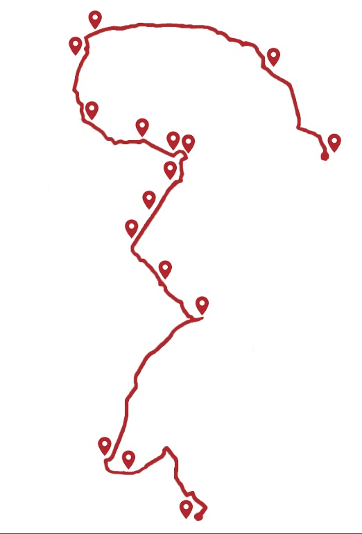

Charles Jencks, an architect and architecture critic once wrote that Modernism was dead, that it died on the 15th July 1972. But I don’t agree with that and hope that if you are here listening to this and doing this walk that you also believe that Modernism is living. This tour is designed and built for the Modern lover, for someone who wants to spend their time with beautiful buildings. Buildings that often aren’t celebrated as much as they should. On this tour you will visit 16 Modern buildings and estates all in south London. A part of London that is visited less by tourists but in my opinion a part of London with more life, more love and more of a story waiting to be told. This tour is telling you the story of these buildings, keeping them alive. Their live is living through you and your love for them.
Modern London Talks
Welcome to Modern London Talks, an audio guided tour of Modern buildings in South London.
Jump to a Specific Stop:
Tap a marker to preview a stop, then tap the card to open it.

No signal? No problem.
Download Offline PDF GuideIncludes map, addresses and photos for all 16 stops.